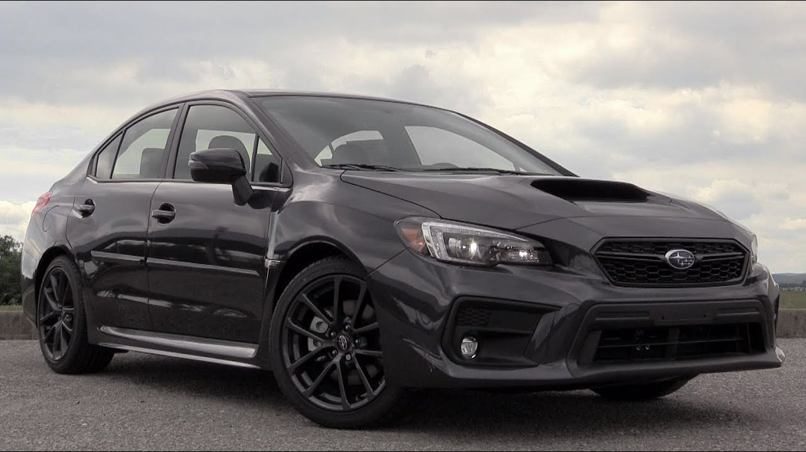
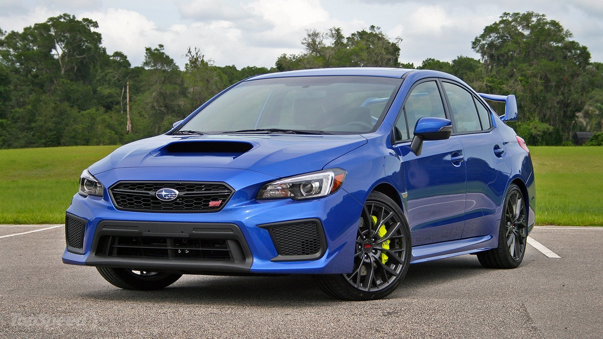

Subaru is considered a titan in the of world of motorsports. They have competed in dozens of rally cross events and gained their prestigious reputation through victories on rugged terrain.
Click Here For More
The Vehicles
Subaru has a fleet of vehicles all of which at one point were tubocharged. Possesing the world's best AWD system paired with a turbo-charged engine has led to Subaru being a popular brand among car enthusiasts and casual fans alike. The Legacy GT, Forester XT, And Outback XT are examples of vehicles equipped with a turbo-charged engine so the casual fan can have a little fun. The true monsters in Subaru's fleet of vehicles are known as the Impreza WRX and the WRX Sti
See All The Vehicles
WRX Vs STi
With 573 horsepower between the two of them, you can't go wrong. For under $30,000, you can drive the Subaru WRX, a turbocharged, all-wheel-drive performance car, respected the world over. If you have approximately $8,000 more, you can buy the STi--a WRX on steroids. For the extra money, you get a bigger engine with more power, an even more sophisticated suspension, and many other upgrades.

WRX
- 2.0-Liter
- 268 HP
- 258lb.-ft torque
- V4 boxer engine
- Turbo-charged w/ Direct fuel injection
- Manual transmission, optional CVT auto
- Top speed: 155mph
- 0-60 5.2 Seconds
- Suspension REAR:Double Wishbone lateral link with pillow- ball bushings.
- Suspension FRONT:Strut-type with aluminum lower L-arm with pillow-ball joints.
- Price:$28,000 base

WRX STi
- 2.5-Liter
- 305 HP
- 290lb.-ft torque
- V4 boxer engine
- Turbo-charged w/ Direct fuel injection
- 6-speed manual transmission
- Top speed: 174mph
- 0-60 4.8 Seconds
- Rear Spoiler
- Brembo Brakes
- Driver controlled center differential
- Suspension REAR:Double Wishbone lateral link with pillow- ball bushings.
- Suspension FRONT:Inverted strut, aluminum L-arm with pillow-ball joints.
- Price:$37,000 base